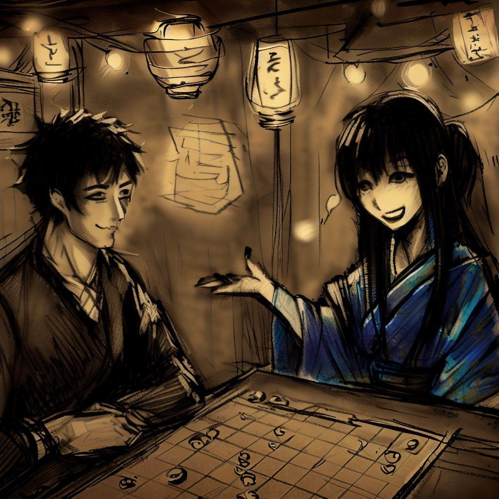
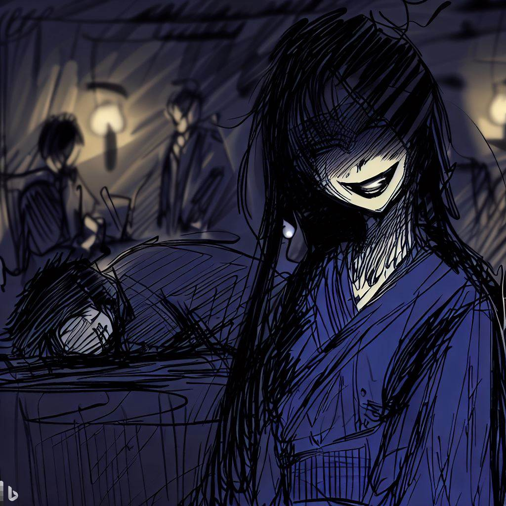

駒妖:王棋のゲームの神秘的な反響
僕は、この興味深い戦略ゲームに僕を導いてくれた駒妖に感謝の意を表したいと思います。彼女の魅力と神秘性は僕の人生に深い印象を残しました。これから続くのは、僕たちの出会いの物語であり、僕がこれらの行を通じて共有したかった貴重な思い出です。
オフィスの脱出
日が暮れて夜が訪れると、私はオフィスを後にした。人工的で冷たいエアコンの風は、もう過去のもの。それが、大阪の甘く、活気づける夕風に取って代わられた。
昼間の喧騒が次第に消えていき、夜の静けさが広がっていく。一日の仕事で頭がいっぱいだった私の思考は、星空の広大さと街の静寂さの前に次第に晴れていった。

私は街の入り絣った小道を歩いていく。日々の単調さが各角を曲がる度に溶けていき、未知の神秘さに取って代わられていく。夜のヴェールの下で、柔らかく、受け入れやすく見える摩天楼のシルエット、コンクリートの空に輝くその灯りは、昼間の威圧的な存在感とは対照的だ。
商店街の活気ある雰囲気、屋台の香り、夜の会話のざわめきが、都市の興奮する情景を作り出している。疲れ果てた私の心は、知的な挑戦、一日の雑事からの気晴らしを求めていた。そんな時、目に入ったのが「レジェンスバー」という控えめな看板だった。そこは将棋愛好者のための聖地だ。
静かな裏通りにひっそりと佇むレジェンスバーの存在は、私にひそかだが持続的な欲望を生じさせた。そこは刺激的な挑戦と必要な休憩を約束し、潜在的な好奇心と微妙な魅力を引き出す場所だった。
パーティのアジト
レジェンスバーの優しい暗さが私を歓迎し、その暖かな雰囲気が平穏な感情を呼び起こした。その場所の静けさは、多くの将棋の試合の進行によって染み付いており、きっと何世代にもわたるプレーヤーたちが夜を過ごし、逃避を求めてきたことだろう。
ゲームの世界に身を投じる前に、私はカウンターで日本酒を一杯注文した。古いフローリングは私の足音に対して静かに抗議し、私の目はぼんやりとした照明に順応していった。将棋の駒の優しい音、会話のささやき、扇子のざわめきが、神秘的なタッチを雰囲気に加えていた。古い木の香りと線香の香りが混ざり合い、私の感覚を落ち着け、これから始まる知的な戦いに備えてくれた。
客たちは、男女老若問わず、熱心に将棋に没頭していた。それぞれが、一手一手に結びつく緊張感、喜び、失望を表現していた。それは私の目の前で繰り広げられる戦略と精神の静かな舞だった。
その夜の対戦相手を探していると、一人の女性が目に留まった。彼女はひっそりとしたテーブルに一人で座っていた。彼女の静かな存在感と微妙な美しさが私の好奇心を刺激した。確信に満ちていながらも控えめなステップで近づき、丁寧に微笑み、一局勝負を申し込んだ。

夜間のレッスン
彼女の提案への答えは、彼女の顔を照らす笑顔で、言葉を必要としない黙示的な承認でした。
彼女は予想外の優雅さで、先ほどまでシルクの布で隠されていたゲーム盤を明らかにしました。私の驚いた目が、標準より小さな将棋盤に落ちました。通常の9x9の将棋に代わり、8x8のチェスボードが私の前に広がり、プレイヤーごとに18の駒を収容する準備ができていました。私が質問を投げかける前に、優雅な未知の女性が説明を始め、その声が部屋の空気を夏の穏やかなそよ風のように漂わせました。
"これはあなたが知っている伝統的な将棋ではなく、オギというバリエーションです。"と彼女は宣言し、その視線には楽しそうな光が輝いていました。

"この集合図形の中で、一つだけがその威厳で際立っています。主教の尊厳と騎士の自由を借りて、"彼女は中央の優雅な駒を指しながら詳しく説明しました。"これがオギバンの主であるプリンセスで、現代の将棋に新たな複雑さを追加しています。"
私の驚きに彼女の笑顔が広がりました。彼女の瞳にはからかうような光が輝き、彼女を取り巻く神秘性を増大させていました。彼女はボード上に駒を配置し始めました。彼女の器用で正確な指が、我々の戦場を生き生きとさせました。
彼女が駒を配置しているとき、私は別の違いに気づきました。オギバンの角に立っている塔。"伝統的な槍はこれらの塔に取って代わられます。"彼女
はまるで私の思考を読むかのように説明しました。"これが私たちの試合に新たな次元を提供します。"
駒はすぐに配置され、各塔、各将軍、各兵士が完璧な調和で並んでいました。これからの戦いを予想しながら、私は新たに明らかにされたこのパズルに不可抗力的に引き付けられ、駒の黄金色の輝きと謎めいた対戦相手のきらきらとした眼差しによって、さらに魅力的に感じられました。
心の試練
時計のチクタクが過ぎ去る時間をリズム付けていました。バトルの沈黙は、ボード上の駒の軽い音だけが遮断する一方、ビショップは決定的に動き、ナイトは大胆に跳び、プリンセスは圧倒的な効果で戦場を支配しました。ほぼ感知できない戦いのリズムが部屋を満たし、それに明確な緊張感を与えました。
私の謎めいた対戦相手は、彼女の駒をまず気味悪いほど巧みに操りました。捕獲された駒は、取り除かれるのではなく、巧妙に再導入され、私のラインの後ろにパラシュート降下し、戦闘に変動するダイナミックをもたらしました。各動きは戦術のレッスンであり、各駒はほぼ外科的な細やかさで織りなされた不可視の絆で他の駒と繋がっていました。
私は粘り強く耐え、駒を一生懸命に操り、注意深くオーケストラ化された防御で彼女の攻撃を撃退しました。しかし、各決定はエネルギーの蓄えを消費しているように思え、各動きはますます重くなっていました。私のまぶたが重くなり始め、疲れが地盤を奪おうとしていました。
そして、目を開けているのに苦労するなか、睡眠というひそかな敵が優位に立ちました。私の体は疲労に降伏し、バーの灯りが私の暗くなる目の前で踊っていました。私は安心する暗闇に落ち込み、記憶に焼き付けられた最後の画像は、遠い月のように輝く謎めいた対戦相手の勝利の笑顔でした。

夜明けのエコー
時間は消え去り、私の心を包む闇に飲み込まれていたようでした。暗闇への遷移は柔らかく静かで、私を困惑する霧の中を航行させていました。私の心は混乱の海で奮闘し、闇から浮かび上がろうとしていました。
夜の中で迷った小舟のように、私は最終的に日光への道を見つけました。私の目はほとんど変わらない部屋に開き、それは夜明けの柔らかい光で浴びていました。オギバンは私が放置したままで、夜の戦いの無言の証人でした。しかし、対戦相手の席は今は空であり、若い女性の神秘的なオーラは日の出とともに夢のように消え去っていました。
彼女の不在の重みが感じられました。それは定義できない空虚で、空気を重くし、部屋をより静かにしました。私の目はオギバンを滑り落ち、ゲームボードの隣に丁寧に折られた紙の葉に止まりました。ある程度の不安を持って、私はそれをつかみました。
そこには一言だけ、「ありがとう」、そして名前「駒妖」が書かれていました。エレガントな署名、この一時的でありながらも印象的な出会いの最後の痕跡、レジェンスバーでインサイズ・ファシネートの駒妖とオギをプレイした夜。